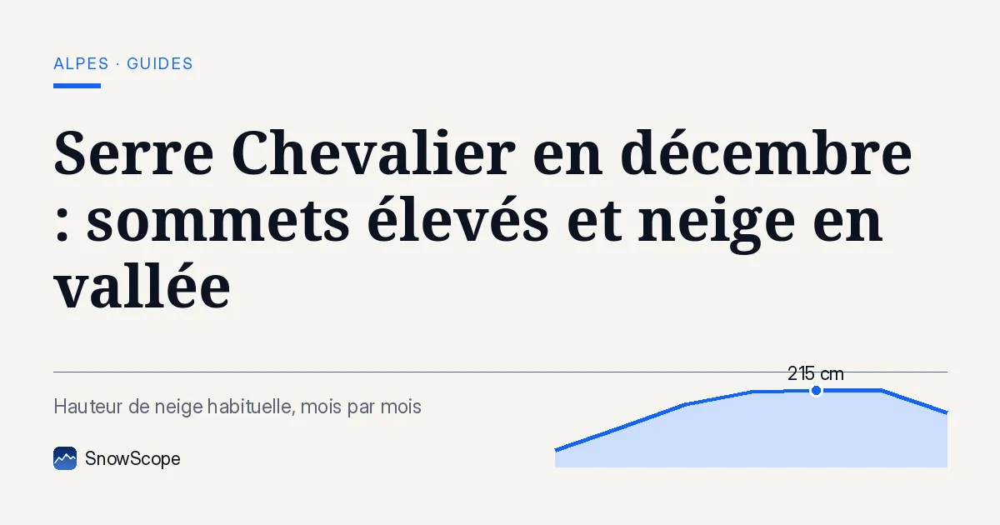

Serre Chevalier en décembre : sommets élevés et neige en vallée
Serre Chevalier est un grand domaine skiable dans les Alpes françaises avec 157 km de pistes balisées et 70 remontées mécaniques. En décembre, l'épaisseur de neige varie beaucoup entre les sommets et le fond de la vallée. Si vous choisissez la bonne semaine et restez en altitude, vous pouvez trouver de bonnes conditions pour un prix plus bas.
Consultez les prévisions neige en temps réel pour Serre Chevalier sur l'application SnowScopeHauteurs de neige, alertes poudreuse et carte 3D, gratuitement.
L'étendue verticale de Briançon au Monêtier
Serre Chevalier est une longue vallée de villages avec un domaine skiable balisé qui couvre 157 km de pistes. La montagne a un grand dénivelé de 1 546 m. La remontée la plus basse est à 1 219 m et la plus haute atteint 2 765 m. Cela signifie qu'il y a une énorme différence de conditions entre le sommet et le bas. Il y a 70 remontées mécaniques balisées reliant les différents villages de la vallée.
En décembre habituel, la base à 1 219 m a 30 cm de neige. Cependant, le sommet des remontées à 2 765 m a généralement 111 cm. Cet écart est important pour quiconque planifie un voyage en début de saison. Vous pouvez souvent trouver de la neige profonde au sommet alors que le fond de la vallée est encore peu enneigé. Notre historique de neige montre que la base peut descendre à 4 cm, ce qui est arrivé lors de la saison 2015-16.

Choisir la bonne semaine pour la neige
Le timing est très important dans cette longue vallée. Notre historique de neige des 46 derniers hivers montre que le sommet de la montagne est très fiable. À partir du 8 décembre, le sommet a 30 cm ou plus de neige dans 100 % des hivers passés. Si vous voulez 50 cm ou plus au sommet, cela arrive dans 87 % des hivers passés entre le 8 et le 14 décembre. Cela monte à 96 % des hivers passés, soit environ 9 hivers sur 10, après le 15 décembre.
Le milieu de la montagne à 1 992 m est aussi assez sûr. Il a 30 cm ou plus dans environ 9 hivers sur 10 pendant la troisième semaine de décembre. La base à 1 219 m est plus difficile. Dans la première semaine de décembre, la base n'a 30 cm ou plus que dans 30 % des hivers passés. Cela s'améliore à 67 % des hivers passés vers la dernière semaine du mois. Si vous visitez tôt, vous devriez prévoir de passer la plupart de votre temps sur les pistes plus hautes.
Prix de début de saison et perspectives actuelles
Vous pouvez économiser de l'argent en skiant avant les vacances de Noël. Un forfait adulte 6 jours de l'ouverture jusqu'au 18 décembre 2026 coûte 276,00 EUR. Si vous attendez le 19 décembre 2026, le prix pour le même forfait 6 jours monte à 345,00 EUR. Séjourner dans les villages plus hauts peut vous aider à atteindre le niveau 1 992 m où la neige est plus constante.
En regardant la neige maintenant le 13 novembre 2026, il y a 0 cm à la base et au milieu de la montagne, mais le sommet a déjà 14 cm. Les perspectives sur deux semaines pour le milieu de la montagne et au-dessus du 13 novembre au 26 novembre 2026 montrent une fourchette de 69 cm à 100 cm de neige fraîche. C'est un signe positif pour le début de la saison.
Comparaison avec les voisins des Alpes du Sud
Il est utile de comparer cette zone avec Vars-Risoul à proximité. Vars-Risoul a un domaine skiable balisé de 131 km de pistes et 38 remontées balisées. Sa remontée la plus haute est à 2 722 m, ce qui est légèrement plus bas que Serre Chevalier. En décembre habituel, le sommet de Vars-Risoul a 77 cm de neige, tandis que Serre Chevalier en a 111 cm à son sommet. Serre Chevalier a aussi un dénivelé plus grand de 1 546 m comparé à 1 090 m à Vars-Risoul.
Pour les coûts, un forfait 6 jours à Vars-Risoul est de 298 EUR pour la saison d'hiver. C'est plus cher que le prix de début de saison de 276,00 EUR à Serre Chevalier. Au sommet de Vars-Risoul, la chance d'avoir 50 cm ou plus de neige entre le 8 et le 14 décembre est de 65 %, ce qui est plus bas que la chance de 87 % à Serre Chevalier. Les deux stations ont une chance similaire d'avoir 30 cm à la base fin décembre, avec 74 % pour Vars-Risoul et 67 % pour Serre Chevalier.
Un regard sur la tendance neige à long terme
Notre historique de neige montre une tendance intéressante sur les 46 derniers hivers. Au milieu des 15 premiers hivers (1980-81 à 1994-95), l'épaisseur moyenne de neige en décembre à la base était de 21 cm. Au milieu des 15 derniers hivers (2011-12 à 2025-26), cette moyenne a augmenté à 38 cm. Au milieu de la montagne, la moyenne est passée de 46 cm à 63 cm. Au sommet, elle est passée de 92 cm à 106 cm.
Même si certaines années sont peu enneigées, la tendance globale pour la neige de décembre est à la hausse. L'hiver dernier, en décembre 2025-26, l'épaisseur moyenne au sommet était de 102 cm, ce qui est proche de l'épaisseur habituelle de 111 cm. Le premier jour de neige durable habituel au sommet est le 05 octobre, tandis qu'à la base, elle n'arrive généralement pas avant le 28 octobre. Cela confirme que les terrains plus hauts sont les meilleurs endroits pour les premiers virages.
Conseils aux skieurs
- Réservez votre voyage pour la deuxième ou troisième semaine de décembre pour obtenir le prix de forfait de 276,00 EUR.
- Concentrez votre ski au-dessus de 1 992 m où il y a 93 % de chances d'avoir 30 cm de neige après le 15 décembre.
- Vérifiez la bulletin d'avalanche avant de sortir des pistes, surtout si le sommet atteint ses niveaux profonds de décembre de 192 cm.
- Achetez votre forfait 6 jours sur le site officiel avant le 19 décembre pour éviter l'augmentation de prix à 345,00 EUR.
Autres cartes (sites externes)
Références et crédits
- Serre Chevalier, official booking site, ski passes 2026-27 reservation.serre-chevalier.com/achetez-vos-ski-pass-serre-chevalier-et-autres-prestations.html
- Risoul, official ski pass page, Forêt Blanche 2026-27 risoul.labellemontagne.com/fr/hiver/forfaits/risoul-foret-blanche/
- Risoul, official 6-day Forêt Blanche pass page 2026-27 risoul.labellemontagne.com/fr/hiver/forfaits/6-jours-foret-blanche/
- SnowScope, December snow at three heights and today's snow map snowscope.app/
À propos de ces chiffres
Chiffres de neige : historique SnowScope, 46 hivers passés (1980-81 à 2025-26) à trois altitudes de chaque station (un modèle du passé corrigé de l'altitude : une estimation pour une zone, pas des mesures de la station) ; chiffres de décembre calculés à partir des hauteurs quotidiennes de ces hivers. Neige actuelle et tendance à deux semaines : prévisions SnowScope (tendance ECMWF et GFS, une fourchette, pas une promesse). Remontées et pistes : cartographie OpenSkiMap. Prix : pages officielles des stations ci-dessous, lues le 2026-11-13 ; les prix peuvent changer, vérifiez avant de réserver.
Bulletins d'avalanche officiels: Météo-France – Bulletin d'estimation du risque d'avalanche
Citer ce bulletin
Pour la recherche, l'enseignement ou la presse : chiffres et graphiques réutilisables librement sous CC BY 4.0 avec cette citation.
SnowScope (2026), Serre Chevalier en décembre : sommets élevés et neige en vallée, https://snowscope.app/blog/fr/2026/11/serre-chevalier-december-ski-week-snow-history-2026.html, consulté le 2026-11-14
SnowScope (Atlas Labs). (2026, November 14). Serre Chevalier en décembre : sommets élevés et neige en vallée. SnowScope snow reports. https://snowscope.app/blog/fr/2026/11/serre-chevalier-december-ski-week-snow-history-2026.html
BibTeX
@misc{snowscope2026serrechevalierdecembersk,
author = {{SnowScope (Atlas Labs)}},
title = {Serre Chevalier en décembre : sommets élevés et neige en vallée},
year = {2026},
month = nov,
howpublished = {\url{https://snowscope.app/blog/fr/2026/11/serre-chevalier-december-ski-week-snow-history-2026.html}},
note = {Published 2026-11-14 20:51 UTC; accessed 2026-11-14}
}· CC BY 4.0 · Méthodes, données et outils →
Serre Chevalier : neige et température selon l'altitude, cet hiver vs l'hiver dernier (outils) →
Suivre Serre Chevalier
Gratuit : un message quand la neige arrive, et la météo chaque matin.